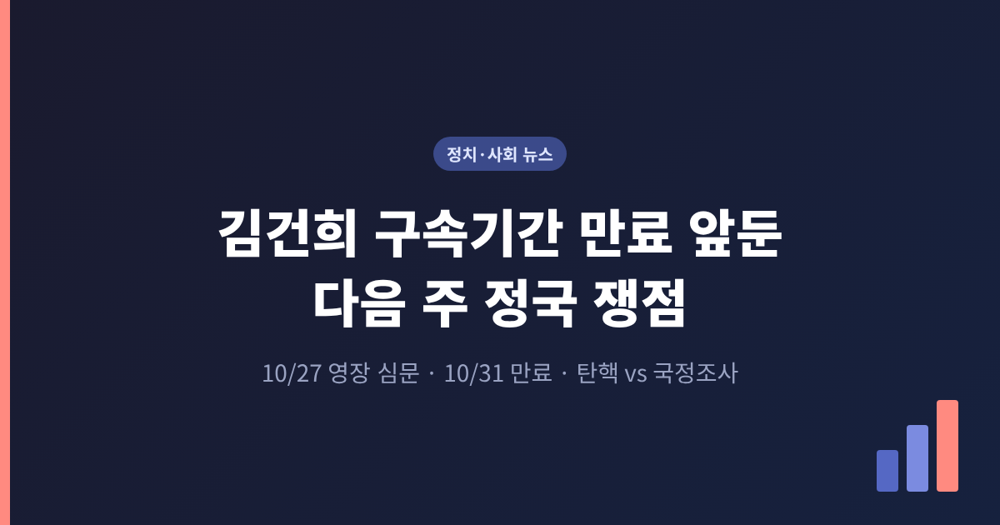
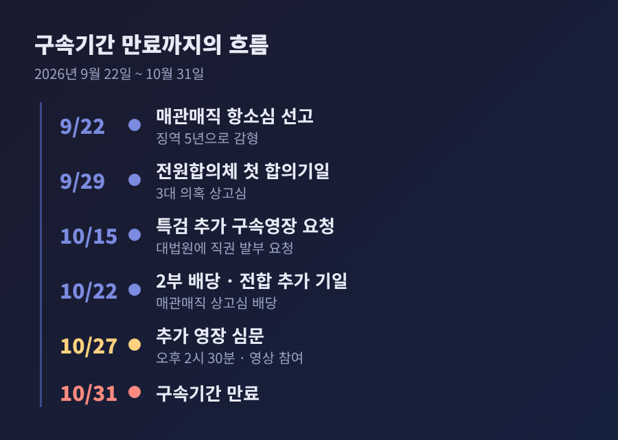
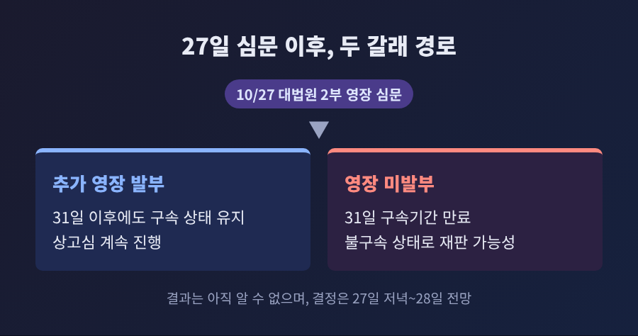
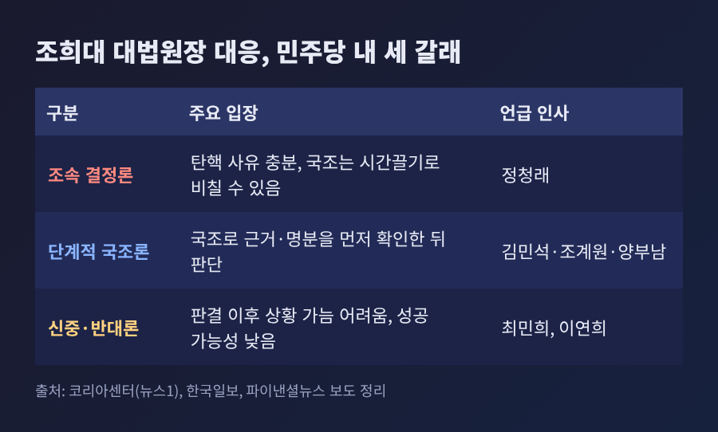
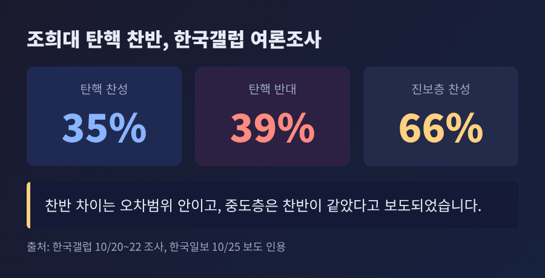
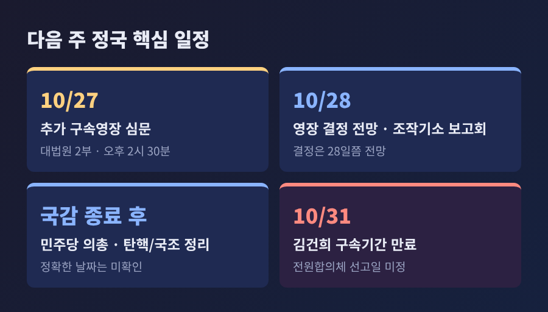

김건희 구속기간 만료 앞둔 다음 주 정국 쟁점, 영장 심문부터 국정조사까지

3줄 요약 - 김건희 씨의 구속기간이 10월 31일 만료되며, 대법원 2부가 27일 오후 2시 30분 추가 구속영장 심문을 엽니다. - 같은 시기 더불어민주당은 조희대 대법원장 탄핵과 국정조사 사이에서 수위를 조절하고 있다고 보도되었습니다. - 국민의힘은 두 길 모두 강하게 반대하고 있어, 국정감사 종료 후 일정이 정국의 분수령이 될 전망입니다.
오늘은 다음 주 정치 일정과 쟁점을 정리해 보려 합니다. 김건희 씨의 구속기간 만료와 재판 상황을 먼저 살피고, 민주당의 조희대 대법원장 대응 논의와 여야 공방을 이어서 다루겠습니다. 탄핵 절차 자체는 지난 글(10월 24일)에서 정리했으므로, 이번에는 날짜와 변수 중심으로 살펴봅니다.
■ 무슨 일이 벌어지고 있나: 구속 만료까지 엿새
김건희 씨는 지난해 8월 12일 증거인멸 우려 사유로 구속되어 재판을 받아 왔습니다. 현재의 구속기간은 10월 31일에 끝납니다.
핵심은 대법원 판단의 속도입니다. 도이치모터스 주가조작, 통일교 금품수수, 명태균 여론조사로 이어지는 이른바 '3대 의혹' 사건은 항소심 선고(4월 28일) 이후 상고심으로 넘어갔습니다. 이후 대법원 전원합의체에서 심리가 이어지고 있습니다. 전원합의체는 9월 29일 첫 합의기일을 열었고, 10월 22일에도 기일을 열었다고 보도되었습니다. 복수 매체는 구속기간 안에 선고가 나오기는 어렵다고 전했습니다. 선고 예정일은 확인되지 않았습니다.
별도의 매관매직 의혹 사건도 있습니다. 1심은 징역 7년을 선고했고, 항소심(9월 22일)은 일부 혐의의 대가성 증거가 부족하다고 보아 징역 5년으로 감형했다고 알려졌습니다. 김 씨 측과 특검이 모두 상고했고, 사건은 10월 22일 대법원 2부에 배당되었습니다.

■ 왜 중요한가: 석방 여부가 정치 일정을 흔든다
구속이 만료되면 김 씨는 불구속 상태로 재판을 이어갈 가능성이 있습니다. 법적으로는 한 피고인의 신병 문제입니다. 그러나 정치권에서는 이 날짜를 탄핵론의 변수로 읽고 있습니다.
예전엔 사법부 판단과 정치권 논의가 각자의 속도로 움직였습니다. 지금은 한 날짜에 포개져 있습니다. 민주당 김의겸 의원은 31일 석방되면 탄핵으로 갈 수밖에 없다는 취지로 말했다고 YTN이 전했습니다. 반면 조국혁신당 조국 전 대표는 석방을 기다렸다가 탄핵하면 국민의 분노가 민주당을 향할 것이라고 주장했습니다. 같은 범여권 안에서도 해석이 갈립니다.
■ 쟁점 하나: 27일 추가 영장 심문
특검은 10월 15일 대법원에 직권으로 추가 구속영장을 발부해 달라고 요청했습니다. 계속 구속할 필요가 있다는 취지입니다. 대법원 2부(주심 오경미 대법관)는 27일 오후 2시 30분 서초동 대법원 1호 법정에서 심문을 엽니다. 김 씨는 남부구치소에서 영상으로 참여하며, 결정은 당일 저녁이나 28일쯤 나올 전망입니다.
전망은 엇갈립니다.
- 발부 가능성이 높지 않다는 시각: 항소심까지 증거조사가 이뤄졌고 재판에 출석해 왔으므로 도주나 증거인멸 우려를 인정하기 쉽지 않다는 변호사의 설명이 더팩트에 소개되었습니다.
- 쉽지 않다는 시각: 사회적 관심이 큰 사건이어서 재판부가 파장을 고려하지 않을 수 없다는 부장판사의 견해, 정치적 부담을 안은 법원이 석방하기 쉽지 않을 것이라는 분석(쿠키뉴스)이 있습니다.
김 씨는 건강상의 이유 등을 들어 석방을 요구해 왔다고 합니다. 어느 쪽 전망이든 결과를 미리 단정할 수는 없습니다.

■ 쟁점 둘: 탄핵과 국정조사, 수위 조절
민주당은 10월 16일 김민석 대표가 조희대 대법원장 탄핵 추진 논의를 시작했다고 밝혔습니다. 구체적인 시한은 정해지지 않았습니다. 이후 국정조사가 함께 거론되기 시작했습니다. 조계원 대변인은 국정감사 이후 탄핵의 구체적 근거를 확인하는 절차로 국정조사를 검토 중이라고 설명했습니다. 김 대표는 24일 "국정조사를 포함해 원래 생각한 대로 차근차근 진행해갈 것"이라고 말했고, 시점은 원내에서 조율 중이라고 했습니다.
당내 목소리는 다양합니다.
- 조속 결정론: 정청래 전 대표는 "화끈하게 조희대 탄핵 결정"이 최상책이라고 했고, 국조는 시간끌기로 비칠 수 있다고 지적했습니다.
- 단계론: 양부남 의원은 필요성에는 공감하지만 사유를 더 쌓은 뒤 추진하는 것이 적절하다는 입장으로 전해졌습니다.
- 신중·반대론: 최민희 최고위원은 사유가 충분해도 판결 이후 상황을 가늠하기 어렵다며 망설여진다고 했고, 이연희 의원은 성공 가능성이 낮고 여당의 과욕으로 비칠 수 있다고 반대했습니다.
신중론의 배경으로 보도는 여권 지지율 하락, 사법부 독립 논란에 대한 부담, 내년 6월 끝나는 대법원장 임기를 꼽았습니다. 국정조사에 시간이 걸리면 퇴임 전 탄핵소추까지 가기 어렵다는 분석도 있어, 국조가 사실상 출구 전략이 될 수 있다는 해석이 나옵니다. 어디까지나 언론의 분석이며 민주당이 공식적으로 밝힌 입장은 아닙니다.
여론은 팽팽합니다. 한국갤럽 조사(10월 20~22일)에서 탄핵 찬성은 35%, 반대는 39%로 오차범위 안이었습니다. 중도층은 찬반이 같았고, 진보층은 66%가 찬성했다고 합니다.


■ 국민의힘의 입장과 새로 얹힌 변수
국민의힘 정점식 원내대표는 국정조사를 탄핵에 대한 여론 반발을 피하려는 "꼼수이자 보복"이라고 규정했습니다. 탄핵안 발의든 국정조사든 강력한 범국민적 저항을 하겠다는 입장입니다.
변수도 겹쳤습니다. 23일 오세훈 서울시장이 항소심에서 무죄를 선고받아 1심 판단이 뒤집혔습니다. 이를 계기로 지지층의 사법 불신과 강경파의 탄핵 압박이 커졌다고 한국일보가 전했습니다. 조국혁신당은 21일 탄핵소추안을 민주당 원내대표실에 전달했고, 탄핵과 법원행정처 해체를 주장하고 있습니다.
민주당은 별도로 '조작기소 특검' 추진도 예고했습니다. 국정감사 종료 후 특검법 처리에 착수하고, 약 12개 사건이 포함될 것으로 예상된다고 서울경제가 보도했습니다. 28일에는 관련 보고회를 열 계획입니다. 이 부분에 대한 국민의힘의 입장은 확인되지 않았습니다.

■ 전망: 확인할 것은 세 가지
정리하면 이렇습니다. 앞으로 며칠, 세 가지를 보시면 좋겠습니다.
- 27일 심문 이후 대법원 2부의 영장 결정이 어떻게 나오는지.
- 국정감사 종료 후 민주당이 의원총회에서 탄핵과 국정조사 중 어떤 경로를 택하는지. 지도부는 연내 결론을 낸다는 입장으로 전해집니다. 국조 계획서 제출이나 본회의 표결 일정은 아직 보도되지 않았습니다.
- 전원합의체의 3대 의혹 상고심 선고 시점. 아직 확정된 일정은 없습니다.
한계도 분명합니다. 이 글은 10월 25일까지의 보도를 바탕으로 했고, 사법부의 판단과 정당의 결정은 며칠 사이에도 달라질 수 있습니다. 보도 내용 중 정당 내부 분위기에 관한 부분은 언론의 해석이라는 점도 감안해 읽으시기 바랍니다.
끝으로 한 마디만 덧붙이겠습니다. 재판은 법정에서, 정치는 국회에서 결론이 납니다. 두 영역의 시간표가 겹치는 한 주일수록, 확인된 사실과 해석을 구분해서 보는 일이 중요합니다.
참고한 보도: 더팩트(10/21), 주간경향(10/15, 10/24), 서울신문(10/22), 쿠키뉴스(10/23), YTN(10/19), 뉴스토마토(10/21), 파이낸셜뉴스(10/21, 10/23), 한국일보(10/25), 서울경제(10/25) 등